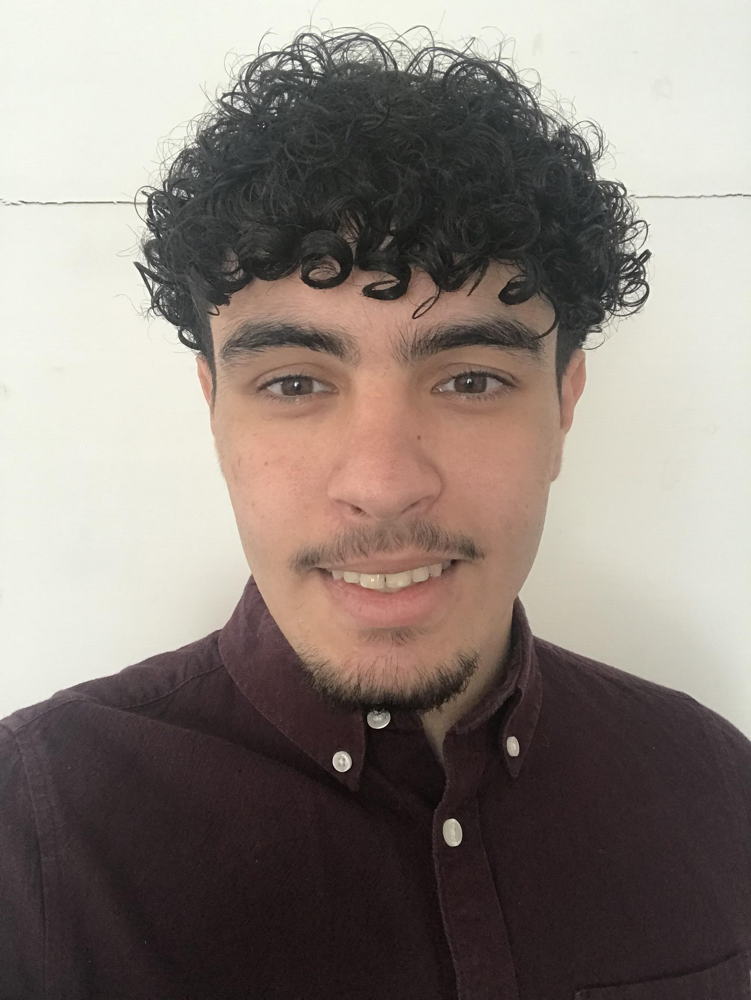
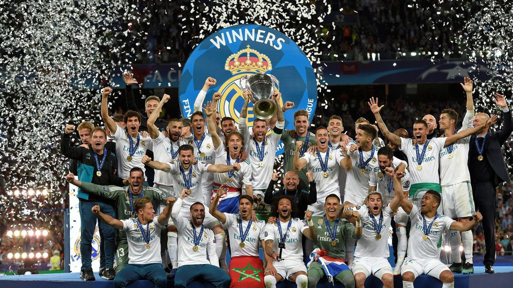

Hello, I'm Amin
Hello, my name is Amin GHAZZALI. I'm a student at IESEG School of Management. I am a great fan of sports and especially of football. I support since my youngest age the Real Madrid. Besides, I have another passion: animals. Indeed, I own 3 lizards and 1 turtle for a little more than 5 years. I have also reserved a puppy for next September of a race that I am eager to discover the American Akita.
Discover IESEGIESEG School of Management

I chose IESEG because it is a general business school that allows us to approach the different notions of economics and management in a very broad way. Our learning is done in 2 parts, the first one during the Bachelor in 3 years and then in Master in 2 years. Throughout our schooling we have the opportunity to do internships to immerse ourselves in the business world but also exchanges abroad with partner universities.
Football
I am a real madrid lover, I dedicate the whole my evenings on match days to join friends and watch the match with them. Also, I sometimes try to go to Madrid on weekends to watch the games. The emotion I get from the games is indescribable. I hope they will succeed in qualifying in the second leg against PSG.
Animals

As mentioned before I am passionate about animals. I have been lucky enough to own 3 lizards and 1 turtle for several years. I have also reserved an American Akita puppy for next September. It is a breed not very well known in France but very interesting to educate.